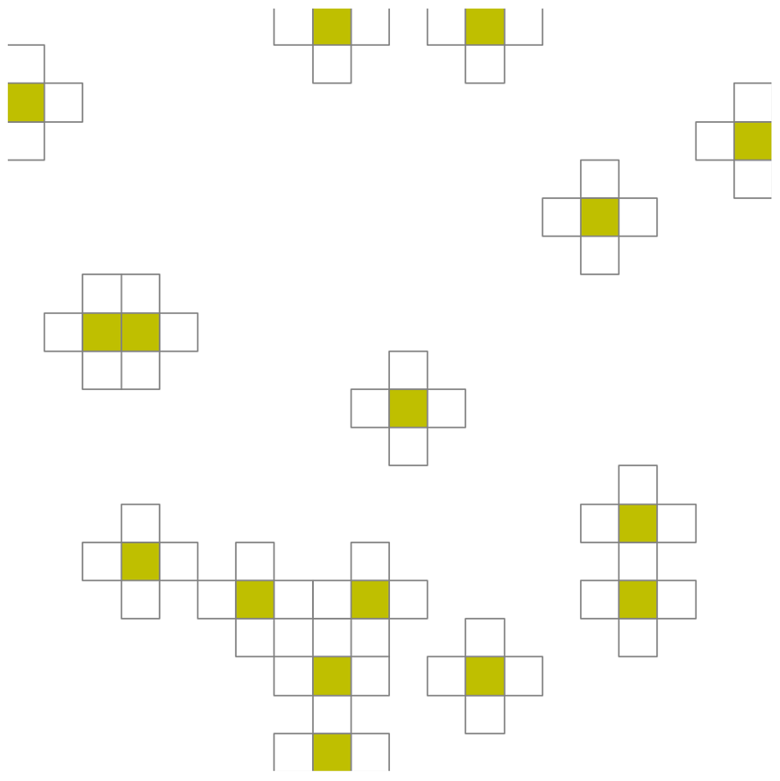

rom: LSPG: hyper-reduced problem
Defined in: <pressio/rom_lspg.hpp>
Public namespace: pressio::rom::lspg
API
// overload for continuous-time systems template< class FomSystemType, class DecoderType, class RomStateType, (1) class FomReferenceStateType, class HypRedOperatorUpdaterType > ReturnType create_hyperreduced_unsteady_problem(pressio::ode::StepScheme scheme, const FomSystemType & fomSystem, DecoderType & decoder, const RomStateType & romState, const FomReferenceStateType & fomRefState, const HypRedOperatorUpdaterType & hrUpdater) // overload for discrete-time systems template< std::size_t num_states, class FomSystemType, class DecoderType, class RomStateType, (2) class FomReferenceStateType > ReturnType create_hyperreduced_unsteady_problem(const FomSystemType & fomSystem, DecoderType & decoder, const RomStateType & romState, const FomReferenceStateType & fomRefState);
Parameters and Requirements
fomSystem:- instance of your adapter class type specifying the FOM problem
- for 1: must satisfy the continuous-time API
- for 2: must satisfy the discrete-time API
decoder:- decoder object
- must satify the requirements listed here
romState:- currently, it must be either an Eigen vector or a Kokkos 1D view
fomRefState:- your FOM reference state that is used when reconstructing the FOM state
- must be copy-constructible and the following must be true:
std::is_same<FomReferenceStateType, typename DecoderType::fom_state_type>::value == true
hrUpdater:- an instance of class that knows how to update operands that live on the stencil and sample mesh.
- must meet the following interface:
struct HypRedUpdater { using operand_type1 = /*should be the type of your fom velocity*/; using operand_type2 = /*should be the type of your decoder's jacobian*/; template<class ScalarType> void updateSampleMeshOperandWithStencilMeshOne(operand_type1 & operand_on_sample, ScalarType alpha, const operand_type1 & operand_on_stencil, ScalarType beta) const { // appropriately compute: // operand_on_sample = alpha*operand_on_sample + beta*operand_on_stencil } template<class ScalarType> void updateSampleMeshOperandWithStencilMeshOne(operand_type2 & operand_on_sample, ScalarType alpha, const operand_type2 & operand_on_stencil, ScalarType beta) const { // appropriately compute: // operand_on_sample = alpha*operand_on_sample + beta*operand_on_stencil } };
num_states:- total number of states you need to use (must be <= 3), if you need more open issue
- only needed for the discrete-time case
Why do we need the HypRedUpdater?
When working with a hyper-reduced problem, pressio has to manipulate objects that have different sizes/distributions. For this problem variant, in fact, some operators are naturally defined on the what we refer to as "sample mesh" while some are defined on what we call the "stencil mesh".
As explained here, recall that:
- sample mesh: a disjoint collection of elements where the velocity (or residual) operator is computed.
- stencil mesh: the set of all nodes or elements needed to compute the velocity or residual on the sample mesh.
- Typically, the sample mesh is a subset of the stencil mesh.
The hrUpdater is an object that knows how to compute a*x + b*y for operands x,y, that (potentially) do NOT have the same size/data distribution since they are defined on stencil and sample mesh.
Explain it to me better!
Suppose that your FOM problem involves a 2D problem and that your FOM numerical method needs at every cell information from the nearest neighbors. For the sake of explanation, it does not matter what problem we are solving, only what we just said. Now, suppose that you want to try hyper-reduced LSPG on it. You come up with a sample and stencil mesh for your problem (read this page for some information about how to select sample mesh cells), and let's say it looks like this:
The stencil mesh is the set of all cells shown, while the sample mesh is the subset color-coded yellow. We have added an arbitrary enumeration scheme to uniquely assign a global index to each cell. The enumeration order does not matter, this is just for demonstration purposes. You have an adapter class for your problem that is able to compute the FOM right-hand-side on the yellow cells, for a given FOM state on the stencil mesh.
For this example, you would need to create an HypRedUpdater object capable of performing those operations on operands that defined on the visualized sample and stencil meshes.
todo: explain that this is application-specific. There is nothing we can be to make this simple for generic applications, but we can simplify this for shared-mem ones and users can fully omit this for Trilinos based applications since we can use the underlying maps to figure out how to combine operators.